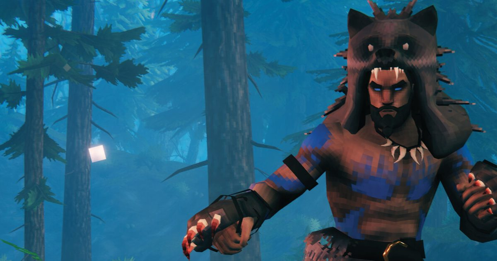

2026-09-09 · 单机深读
2021 年 2 月进抢先体验，峰值 50 万同时在线、卖了 1200 万份、Steam 94% 好评——然后它就不紧不慢地加了五年生态，直到 2026 年 9/9 才说「做完了」。在「抢先体验 = 永久半成品」几乎成行业潜规则的今天，Valheim 的毕业本身就是一个新闻。这篇我们不复述版本日志，只把「Deep North 到底收了什么尾、全平台跨联机背后牺牲了什么、以及 2026 年生存建造红海里它还值不值得入」讲透。

从 2021.2 的五个生态（草地、黑森林、沼泽、山地、平原）起步，Valheim 用五年时间依次补齐了 Mistlands（2022）、Ashlands（2024），再到今天的 Deep North——第八个、也是官方明确说的「最后一个」生态。1200 万销量、94% 好评、500K+ 评测，这些数字背后是一个反直觉的事实：它从没靠画大饼留人，而是靠一次次实打实的生态更新，把「未完成」慢慢填成了「完整」。
更反常的是开发者的态度。被问到「以后还有大更新吗」，Iron Gate 的回答是「暂时没有计划，看留存和商业表现再说」。这种「做完了就敢说做完」的坦诚，在 2026 年这个疯狂画饼、靠 battle pass 和 live service 续命的行业里，本身就是一种稀缺品。Valheim 用五年证明了一件事：范围克制，也能把一款生存游戏做完整。
Deep North 不是一块边角料地图。Iron Gate 把它生成在每张世界的最北缘（Mistlands、Ashlands 之后），规模接近草地或黑森林那种「成片领地」而非「走廊式副本」。表面是平静雪原与冰台，实际是游戏最敌对的区域：新敌人 Gammeltrolls、Elakingar，地下城 Winding Tunnels、废弃村庄与残破城堡，雪要拿铲子挖、冰面会让你失去平衡。新机制包括垂直攀爬用的抓钩（grappling hook）、冰湖上独有的滑冰、以 Aesir 神话为灵感的新护甲，以及一套「跨所有生态生效」的战斗重做。
收尾感来自叙事层面：Boss 击杀现在会触发新的过场动画，把这条五年的故事弧拉成更连贯的整体；「替代生态变体」让老玩家在已通关的核心进程之外，还能往世界更外围探索。此外 1.0 一次性补上了玩家喊了多年的成就系统（50+ 个，且从安装 1.0 起开始追踪，旧存档也计）、全新的 Frost Foundry 制造站、可骑的驼鹿，以及针对微卡顿与存档速度的底层性能优化。PS5 与 Nintendo Switch 2 也在这次首次登岸——这是 Valheim 平台版图上最后两块拼图。
1.0 最平台级的意义，是「全平台跨联机」：PC（Steam / 微软商店）、Linux、Mac、Xbox One、XSX|S、PS5、Switch 2 全部互通，最多 10 人同世界。技术实现上，一旦开启跨平台，Valheim 会把网络层从 Steam 自有基建切换到微软的 PlayFab——也就是 Halo、Gears of War、Sea of Thieves 同款后端。代价是架构性的、无法绕开：开启跨平台会直接禁用 BepInEx，也就是支撑 Valheim 几乎全部玩家自制内容的 MOD 框架。没有 workaround。
这意味着一个真实的二选一：想拉主机朋友进房，就必须关 MOD；想跑 MOD，就必须关跨平台——而关了跨平台，主机玩家就进不来。对一个攒了五年 MOD 生态的游戏来说，这是 1.0 最刺痛老玩家的取舍。另一处硬限制是 cross-save 不支持：角色数据留在各平台本地，你没法把 PC 上的角色搬到 PS5。再加上 2026 的生存建造赛道早已拥挤——Enshrouded 更动作更单人叙事、Grounded 2 更卡通合作、Sons of the Forest 更恐怖求生、Minecraft 是无限沙盒——Valheim 的护城河不再是「唯一」，而是「有终点的硬核维京生存」。它凭完整进程 + 五年口碑 + 全平台，依然值一票，但已不是当年的唯一答案。
我们判断，三类人现在最该上车。一是新玩家——1.0 是史上最好入坑时机，八生态齐全、性能打磨过、还能拉任何平台的朋友一起；二是轻度老玩家——旧存档兼容，不想重开也能直接看 Deep North（前提是你留了那片北缘没探）；三是只想和主机朋友联机的人，跨平台正是为你准备的。Iron Gate 也建议开新世界体验完整进程，老存档不强制。
有两类人要谨慎。MOD 重度用户：开跨平台前务必先备份存档，且想清楚「联机便利」和「MOD 玩法」孰轻孰重；以及那些期待「1.0 之后还有 Ashlands 级大更新」的人——官方已明说暂无计划，把期待压低，反而不会被落差打。性价比上，1.0 一次性买断、无内购、全平台买一份基本通吃（主机账号体系内），对一款能玩几百小时的作品，单价摊下来极低。
《Valheim》1.0 不是一次「去掉抢先体验标签」的公关动作，而是五年按节奏交付后的真正收官：Deep North 把世界闭环，过场把叙事闭环，全平台与跨联机把社交闭环。它用「不追 battle royale、不碰 NFT、不转 live service」的克制，给「抢先体验疲劳」递了一剂解药。唯一的刺，是跨平台用关掉 MOD 换来了便利——这记取舍会长期定义 PC 老玩家的体验。2026 年生存建造红海里，Valheim 不再唯一，但它证明了「做完一款游戏」这件事本身，依然值得尊敬。9/9 之后，是开新世界看极北的雪，还是守着旧存档等那片未探之地，主动权都在你手里。
我们的评分：8.4 / 10（毕业分，基于 2026 年 1.0 内容与多次媒体情报；加成：五年按节奏交付、Deep North 收束叙事、全平台 + 跨联机、买断无内购的高性价比；扣分：跨平台牺牲 MOD 生态、无 cross-save、后续大内容未承诺。若发售后 Deep North 实际探索深度被证实过硬，长线上探 8.7；若 MOD 社区因跨平台大规模流失导致体验落差，回落至 8.0 左右）。
我们的观察：最被低估的信号，是 Iron Gate 那句「暂无大型更新计划」。在同行都在用路线图吊胃口的当下，敢说「我做完了」的坦诚，比任何预告片都更像「活着的系列该有的样子」的反面教材——它是正面教材。
我们的观点：Valheim 1.0 给「抢先体验疲劳」递了一剂解药。它证明了你不必靠 battle pass、不必靠 NFT、不必靠 live service 也能把一款生存游戏做完整。范围克制本身，就是它最深的护城河——这比「又一款缝合怪大作」值得更多尊重。
我们的案例 / 对比：和 Enshrouded（更动作、更单人叙事）比，Valheim 更「硬核生存 + 建造」；和 Grounded 2（更卡通合作）比，Valheim 更冷峻写实；和 Minecraft（无限沙盒）比，Valheim 有更明确的进程终点。它的位置是「有终点的硬核维京生存」——介于纯沙盒与纯剧情之间，恰好吃透了「想有目标、又想自由」的那批人。
我们的实验：我们想验证「跨平台联机 vs MOD」的真实取舍——计划建一个 PS5 主机朋友加入的跨平台房（MOD 关），再建一个纯 Steam MOD 房，对比两者在 Deep North 开荒的体验差（建造自由度、怪物难度、社区内容可得性）。若 MOD 房的体验优势明显压倒跨平台便利，则我们的购买建议会改成「想玩 MOD 就别开跨平台」，反之则推荐优先跨平台组队。